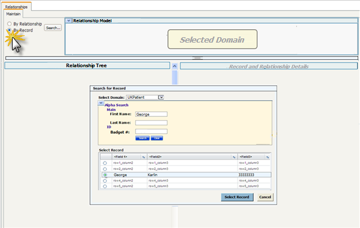

|  1. Selected “By Record” toggle button Shows the" Search for Record" overlay. The search criteria changes depending on the domain that is selected as does the record fields that are shown. The user selects a single record to view all the records that the record is associated with. | 2. Selected Domain: UKPatient Record: George Karlin Shows all relationships organized by Domain. Shows the Summary for the selected record, George Karlin and the “Select a Relationship Instance” message. |
3. Selected the Record by clicking on the hyperlink.
| 4. Selected the “Show Relationship Types” arrow. Shows a summary of all the relationships defined between the two domains. Alternate text and tip for the arrow is “Show Relationship Types between SelectedDomain and AssociatedDomain More than one of these can be shown at a time. They can be hidden either via The “<<Hide” link or by reselecting the arrow. |
5. Selected Add.. for a specific domain and relationship |
{kind=link}
{kind=link}
{kind=link}
{kind=link}
{kind=link}